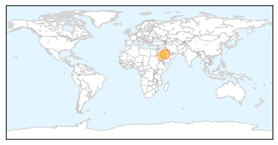
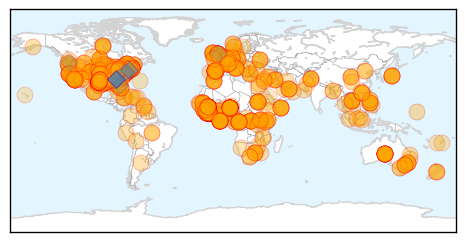

MERS
30-Day Web Trend
0 alerts, 0 warnings

30-Day Twitter Trend
3 alerts, 0 warnings

Article Locations
Article Confidences

Top Articles:
Top Tweets:
-
No tweets found for Oct 15, 2014
Ebola
30-Day Web Trend
12 alerts, 1 warnings

30-Day Twitter Trend
7 alerts, 4 warnings

Article Locations
Article Confidences

Top Articles:
- 1.000
- Ohio Dept. of Health: Texas health worker with Ebola visited Akron area
- 1.000
- Ebola outbreak, treatment, prevention
- 1.000
- Ebola In-Depth: #FactsNotFear
- 1.000
- Nurses group slams Dallas hospital for sloppy Ebola care
- 1.000
- Ebola forecast: Grim
- 1.000
- 10 things every Hoosier should know about Ebola
- 1.000
- Obama cancels trip, meets officials after second Ebola case confirmed in Texas
- 1.000
- WHO says 10,000 new Ebola cases likely by December
- 1.000
- Worst Ebola outbreak on record
- 1.000
- Worst Ebola outbreak on record tests global response
- 1.000
- Dallas nurse with Ebola was allowed to fly with fever
- 1.000
- The Portland Press Herald / Maine Sunday Telegram
- 1.000
- Texas Health Care Worker With Ebola Took Commercial Flight on Monday
- 1.000
- CDC Monitoring 76 Hospital Workers in Dallas for Ebola Exposure
- 1.000
- Local medical facilities amp up Ebola preparedness training
- 1.000
- Ebola In The United States: What Happened When
- 1.000
- 10 Essential Facts About Ebola
- 1.000
- Health Officials Reviewing Ebola Treatment Procedures at Dallas Hospital
- 1.000
- #FactsNotFear
- 1.000
- #FactsNotFear
- 1.000
- Ebola in US: Amber Joy Vinson named as second nurse infected at Texas hospital
- 1.000
- Ebola in US: Authorities trying to trace 132 passengers who were on flight with infected nurse
- 1.000
- World vows Ebola action as second US case stirs fears
- 1.000
- Here's A Breakdown Of The Ebola Treatments Used So Far In This Outbreak
- 1.000
- Second Ebola case in US: First Ebola contractee on American soil in Texas
- 1.000
- Dallas nurse with Ebola was allowed to fly with fever
- 1.000
- News Guide: Latest news on Ebola
- 1.000
- Ebola Q & A: What you should know now that Cleveland is linked to deadly virus
- 1.000
- If Ebola came here, what would we do?
- 1.000
- Ebola: Timeline of a disease
- 1.000
- WHO: 10,000 new Ebola cases per week could be seen
- 1.000
- Ebola crisis: Obama says US outbreak risk very low
- 1.000
- Ebola outbreak: Jet passenger alert over US nurse
- 1.000
- Second Texas health worker tests positive for Ebola
- 1.000
- WHO says 10,000 new Ebola cases likely by December
- 1.000
- WHO says 10,000 new Ebola cases likely by December
- 1.000
- Virginians have mixed feelings on travel ban from Ebola affected areas
- 1.000
- News Guide: Latest news on Ebola
- 1.000
- Local hospitals prepare for Ebola
- 1.000
- Local hospitals prepare for Ebola
- 1.000
- 10,000 New Ebola Cases Per Week Could Be Seen « CBS Seattle
- 1.000
- Will My Child Get Ebola?
- 1.000
- Ebola: 23 things you need to know about the deadly virus
- 1.000
- Ebola unlikely in Alaska, but SPH still prepares
- 1.000
- New Ebola cases may hit 10,000 per week
- 1.000
- Ebola outbreak: Get up to speed with the latest developments
- 1.000
- What you need to know about Ebola. Debunking the myths.
- 1.000
- Second US health care worker tests positive for Ebola
- 1.000
- CHRONOLOGY-Worst Ebola outbreak on record tests global response
- 1.000
- CDC: Nurse With Ebola Transferring To Atlanta
Showing top 50 articles...
Top Tweets:
- 0.941
- EPA-registered disinfectants, including bleach, kill the Ebola virus.
- 0.930
- RT: US-Texas: Second Texas health worker 'tests positive' for Ebola http://t.co/lI2IrmcuAy h/t nola_mnr Ebola
- 0.852
- RT: 2nd TX health worker confirmed to have tested positive for Ebola & traveled by air 10/13 before reporting symptoms: http://t.c…
- 0.817
- The deadly virus was, until recently, something that happened “over there” - @bahiyahyas on the Ebola empathy gap http://t.co/yxEUPjoFz9 20141015 ebola 0 0.231673709174 There's a role for each and every one of us to play...it's as simple as learning more about the disease," - @IshaSesayCNN on Ebola Deeply
- 0.811
- 2nd TX health worker confirmed to have tested positive for Ebola & traveled by air 10/13 before reporting symptoms: http://t.co/FVa0P8pjpM
- 0.776
- WHO situation report on Ebola in West Africa: Oct 15 http://t.co/Fz7ZdhQ3U7
- 0.765
- Three days after a nurse who treated a Liberian man with Ebola was found to have the virus, a second worker at... http://t.co/p7rJmTnVlm
- 0.755
- The latest Ebola developments, all on one page. Here's our curated summary of the Ebola news http://t.co/njgffoWwhw
- 0.754
- There is no evidence that mosquitos or other insects can transmit Ebola virus. http://t.co/UOMbii8pas
- 0.665
- 2nd Texas health worker Ebola case is very concerning. My thoughts are w/patient & their family.
- 0.659
- Ebola Test Is Positive in Second Texas Health Worker http://t.co/5IpoUKv5ts
- 0.657
- BREAKING: President Obama calls meeting with Cabinet on Ebola outbreak
- 0.652
- RT: How is fighting global ignorance about the Ebola outbreak: http://t.co/sFbyLCy2V4
- 0.645
- CDC confirm Dallas ebola patient was in Ohio Follow for updates http://t.co/tjxYhFgDrr
- 0.641
- RT: WHO will declare the end of Ebola outbreak in Nigeria on 20 Oct, if no new cases are detected http://t.co/rBulpOMVRu
- 0.638
- Ebola... http://t.co/pdLjfYix4c
- 0.638
- Ebola Strikes Second Texas Hospital Worker and More Cases a ‘Possibility’ Follow for updates http://t.co/v52fT7LzHE
- 0.632
- Dallas Morning News says staff treating Ebola patient didn't wear protective gear until his test came back positive http://t.co/xwTlT3c69D
- 0.632
- Yes. On Sept 30, CDC confirmed the1st case of Ebola in the US in a person who traveled from Liberia to Dallas, Texas.
- 0.631
- Hello everyone, don't forget to pray for Ebola victims and all nations affected. Prayers to the world at large. We pray for health and peace
- 0.624
- RT: Ebola Cases Double Every Four Weeks: WHO. http://t.co/smLAw8Tyux
- 0.617
- Texas college rejects applicants from Ebola-affected countries, inc. Nigeria, where the disease was contained http://t.co/Va9gfi9Lp3
- 0.617
- RT: 2nd Texas health worker Ebola case is very concerning. My thoughts are w/patient & their family.
- 0.612
- Ebola is winning the race. "We either stop Ebola now or we face an unprecedented situation." http://t.co/umR4Gbv9S6 via
- 0.599
- CDC says Dallas nurse boarded plane with slight fever and should not have traveled. http://t.co/ekSkuYhKUn Ebola transmits through fluids.
- 0.597
- Texas: Please evacuate your Ebola patients to somewhere that can handle it. Ugh.
- 0.575
- RT: READ summary of Geneva briefing: @WFP, @WHO on Ebola; @Refugees on Syria, Libya; @WHO on Marburg virus in Uganda http://…
- 0.575
- How are nurses getting infected with Ebola? via@theconversation http://t.co/fAZKP4BUhZ
- 0.566
- RT: Human Trials Underway for Ebola Vaccine http://t.co/V0ZJcdsTp2
- 0.563
- CDC is already taking active steps related to hospital preparedness for Ebola treatment. http://t.co/ZmSqbeEhLk
- 0.560
- 2nd health worker exhibited no Ebola signs/symptoms on Frontier Airlines flight 1143 on 10/13, but passengers should contact 1-800-CDC-INFO
- 0.558
- RT: Dance to fight Ebola ShakeEbolaOff is raising funds for the only fully functioning hospital in Sierra Leone. http://t.co/…
- 0.556
- Three things to keep in mind regarding the 2nd nurse in Dallas infected with Ebola: 1. None of Duncan's family or... http://t.co/QUaXLiTyE5
- 0.553
- No evidence of Ebola Vaccine & Autism. aspergers Psychiatry healthcare CDCwhistleblower üá∫üá∏üë™üëèüëãüëãüëèüëãüëèüëãüëèüë™üá∫üá∏ üëá http://t.co/DmwwYx8g9o‚úã ‚òùÔ∏è
- 0.547
- AFD Blog `Texas DSHS: Second HCW Tests Positive For Ebola' http://t.co/7FqC77jNIh
- 0.542
- Ebola Alert?! http://t.co/tO8mMTwKSR
- 0.541
- How Ebola is threatening chocolate production in West Africa, from http://t.co/c61nnAR00H
- 0.537
- RT: Here are WHO recommendations for testing for Ebola virus disease and confirming a case http://t.co/rBulpOMVRu http://t.co/Wxcs0x6…
- 0.537
- CDC working closely w/Texas hospital & staff around the clock. Intensive efforts underway to train & retrain staff on Ebola preparedness.
- 0.536
- RT: CDC: Healthcare worker diagnosed with Ebola this morning had fever of 99.5 degrees when she flew from Ohio to Texas htt…
- 0.531
- How long can the virus survive outside of the human body? Why are healthcare workers catching it? The Ebola basics http://t.co/rj2MFQv24M
- 0.529
- Dallas Ebola Patient Being Transferred to Emory http://t.co/rNLjkBctS4
- 0.527
- Second Health Care Worker With Ebola Was In Isolation Within 90 Minutes: Official http://t.co/7xNdZ9OX0r
- 0.513
- RT: CDC is already taking active steps related to hospital preparedness for Ebola treatment. http://t.co/ZmSqbeEhLk
- 0.513
- RT: CDC considers sending U.S. Ebola patients to special hospitals http://t.co/nNTHAVpkOv
- 0.509
- From antibodies to ZMapp, our Ebola glossary covers the scientific terms behind the outbreak http://t.co/HCBUgIl8bF